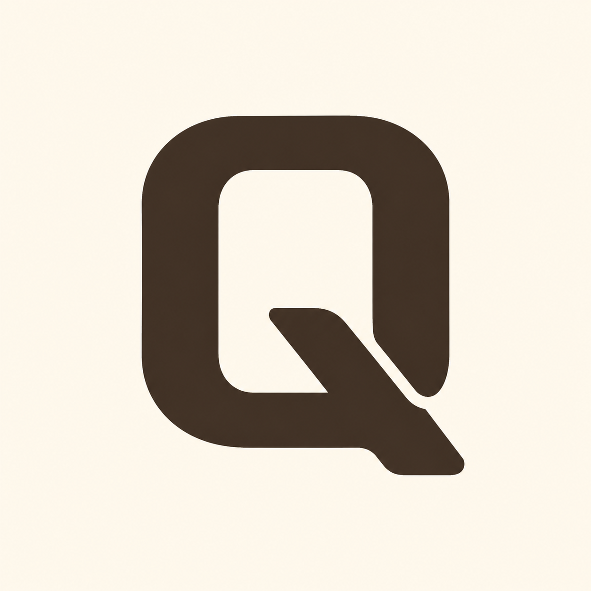

Selected raw / reference only
Provider raster, 1254 × 1254
Uncropped and untouched. Tonal shading and softened raster edges are not production authority.
The raw is shown full and uncropped. Shading is excluded; the rounded-rectangle bowl, vertical counter, internal tail origin, and single junction slot remain.

Uncropped and untouched. Tonal shading and softened raster edges are not production authority.
Optically centered mass, friendlier outer corners, compact blunt tail, and a protected transparent junction slot.
The external SVG supplies every mark. Cocoa is its default currentColor; black and reversed are board-only CSS filters, while the checker exposes true transparency.
#3A2D25 on #FFF8EE
Meaning does not depend on brand color.
One-color reversal on cocoa-dark.
Counter and slot are genuine negative space.
Outlines mark the exact sample boxes. The source viewBox remains 0 0 120 120 with no geometry beyond its bounds.
The tail begins visibly inside the lower counter, the single diagonal slot remains open, and the rounded blunt exit avoids an arrow tip.
Context-only simulations. The dark owner sidebar keeps the one-color mark on a deliberate light backing.
These are CSS review simulations, not delivered Apple, PWA, maskable, favicon, or runtime derivatives.
180px warm-cream application with 24px inset; no file exported.
192px standard application with 26px inset; no file exported.
The dashed 409.6px circle marks the central 80% safe region around a 312px mark. No derivative is created.
Not a magnifier, circle-plus-handle, lowercase q, or generic font Q.
Rectilinear bowl, vertical counter, joined diagonal tail, one slot.
Soft corners and compact terminal offset the strong geometric mass.
Junction reads as ordered crossing; tail stays fused and blunt.